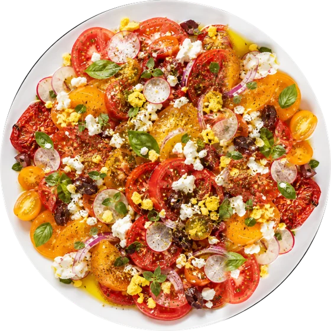
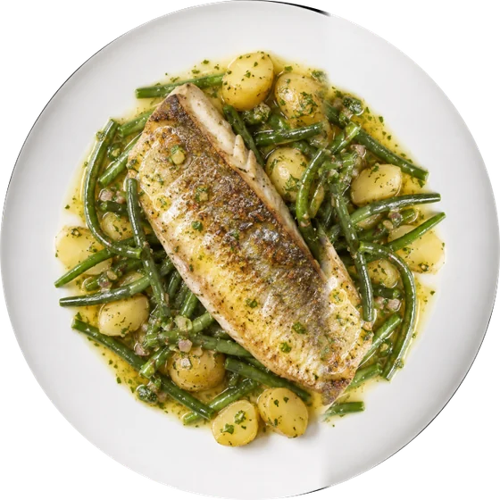
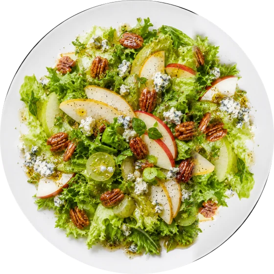
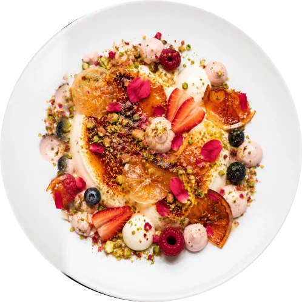
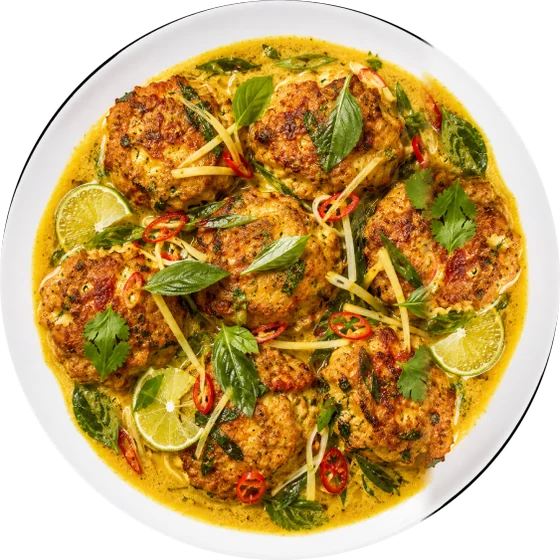
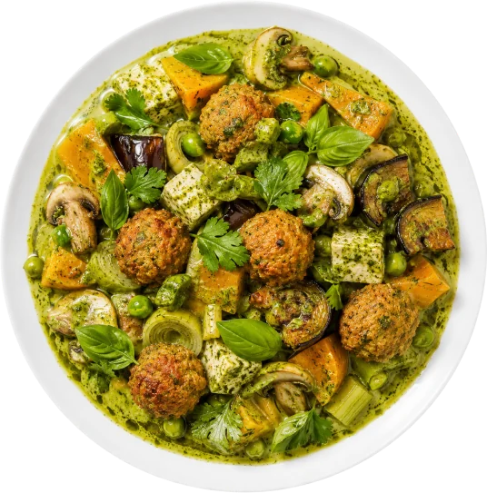
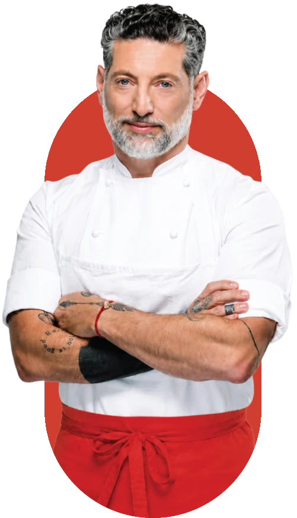
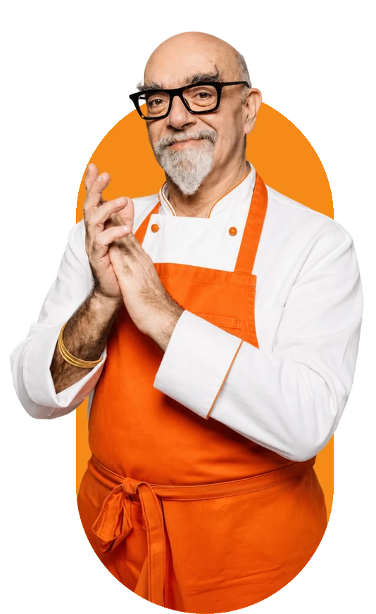
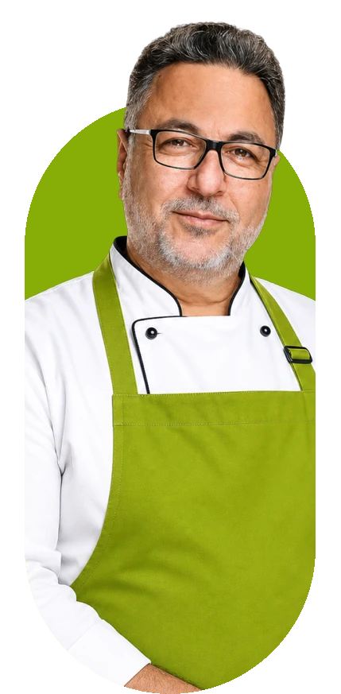

What if AI could bring us closer to
what makes us human?
Pinch brings the human touch of real chefs into everyday cooking.
As AI moves into every part of our lives, chefs are left out.
Their knowledge lives inside the restaurant, and their income depends on how many seats it has. Pinch turns a chef's knowledge and way of thinking into a personal cooking companion for home cooks, and gives chefs a new income stream beyond the physical restaurant.









Two sides, one product.
Home cooks want to cook with confidence. Not another recipe, but someone next to them when something goes wrong.
Chefs want to stay relevant and grow beyond the restaurant. Pinch turns their knowledge into a product that earns while they cook somewhere else.
How Pinch makes money.
Pinch runs on a freemium model. Anyone can start cooking for free, and the subscription grows with how much you cook and how many chefs you want in your kitchen.
Free
A first taste, just to get to know each other.
- 2 featured chefs, changing every month
- 5 selected recipes
- 2 cooking sessions
- 3 shopping lists
₪29/ month
For cooks who don’t want to waste time.
- 6 chefs of your choice, swappable every 90 days
- All of their recipes
- Up to 15 cooking sessions a month
- Save 10 recipes, 10 shopping lists
- No ads
₪49/ month
For those who know what’s good for them.
- Every chef, unlimited
- Unlimited cooking sessions and recipes
- Unlimited saved recipes and shopping lists
- No ads
- A Pinch kitchen kit, as a gift
Monthly subscriptions, plus ads in the free plan. The free plan brings cooks in, and its limits are what make upgrading worth it.
Every chef gets a fixed share of the revenue each month. When cooks talk to a chef past a set number of conversations, that chef’s share goes up.
How I'd measure success
- First cooking session completed
- Questions asked during a session
- Cooks who return within 30 days
- Free to paid conversion
- Chefs onboarded
- Monthly revenue per chef
Pinch hasn't launched, so these are the KPIs I designed for, not results.
Listening to the people in the kitchen.
I used qualitative research to understand how people actually cook, where they get stuck, and how chefs pass on what they know. Open conversations, not checklists.

The note I wrote to Assaf Granit, and the reply that came back: a Zoom invite.
No matter how precise the recipe is, no one will make it the same. Everyone has a different pot, a different stove.
Cooks, even professional ones, don't taste between steps. That's the most common mistake.
In the end, food is just an excuse to get together with the people we love.
The market has content, not companionship.
| MasterClass | SideChef | aiCoChef | Pinch | |
|---|---|---|---|---|
| Real, well-known chefs | ✓ | ✓ | ||
| Guidance while you cook | ✓ | ✓ | ✓ | |
| Adapts to you and your kitchen | ~ | ✓ | ✓ | |
| A chef's own voice and philosophy | ~ | ✓ |
What I took from it
01The recipe is only a starting point
02Tasting is the skill no one teaches
03Everyone learns differently
04Cooking starts from what you have
05Chefs' knowledge stays in the kitchen
06The market has content, not companionship
From insight to decision
The problem isn't the recipe.
Home cooks have endless recipes, but no one to guide them when the recipe meets their real kitchen. Chefs have that knowledge, but no way to share it beyond the restaurant.
bring a real chef's guidance into a home kitchen,right when it's needed,without the chef being there?
What I chose to focus on
01A conversation, not a recipe page
02Real chefs only
03Start from anywhere
Designing the conversation first.
Five tabs, with Home in the center. Conversations get their own tab, because in Pinch a chat is something you come back to, like a cooking session you saved.
Every path ends in the same place: cooking together with a chef.
The full sitemap.
Before designing screens, I mapped what lives under each tab. Every item here is a real screen or popup in the Pinch prototype.
- Sign in
- Recipes I created
- My shopping lists
- Payment & subscriptions
- Updates
- Loved recipes
- Recipe
- Start cooking
- Recipe
- Daily picks
- Holiday recipes
- What’s in the kitchen
- Voice note
- Receipt photo
- Fridge photo
- Suggested recipe
- Cuisines
- Moroccan · Italian · Mexican · Asian
- Featured chefs
- Popular recipes
- Recipe chats with chefs
- My consultations
- Full conversation
- Chef profile
- Chef team
- Chef profile
- Filter recipes
- Recipe
- Shopping list
- Recipe steps
- Start a chat
- Chef profile
Leads into cooking together with a chef.
Turning an interview into decisions.
Before any screen, I mapped a full cooking conversation with Assaf Granit's AI chef, for his amberjack sashimi from Machneyuda. Every branch comes from something he said in the interview.


Wireframes. Clear hierarchy, generous spacing and a lot of room for chefs and food, so the photography can do the talking.
Warm, appetizing, and a little bold.
The interface stays clean so the food and the chefs can lead: dishes on white plates, chefs in their own aprons, and Tomato Jam red holding it all together.


"Assaf, help. I wanted an omelet.Olive oil or canola?"
I wrote, shot and edited two short films to show the product where it actually lives: in the middle of cooking, with a question that can't wait.
What I'd test next.
01Usability testing
02Trust in an AI chef
03The chef side
04Voice-first cooking
What I'd do differently.
Pinch was designed around one cook and one chef. Looking back, I'd open it up to other cooks too: reviews on every recipe, photos of how the dish actually turned out, and tips from people who already made it. It would help people choose what to cook and hear honest opinions before they start, and it fits what my conversations kept coming back to: food is something we share.
Two chefs with completely different backgrounds told me the same thing: the recipe is never the point. That idea shaped every decision in Pinch, from the entry points to the "taste now" moments. It also taught me that the most useful thing AI can do here isn't to know more than the chef. It's to carry the chef further.
Pinch is here to make cooking easier and more of an experience, but above all, more human. The kitchen holds so much soul and tradition, no one should have to be in it alone.
Something's cooking.